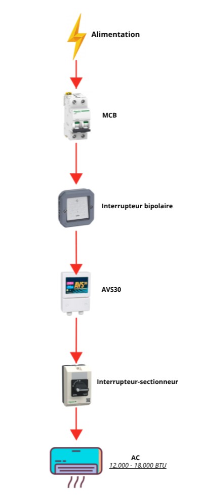

Cette solution utilise un interrupteur bipolaire manuel pour activer ou couper entièrement l’alimentation du climatiseur, offrant un contrôle très simple. Elle est adaptée aux climatiseurs d'une puissance comprise entre 12 000 et 18 000 BTU.

| MSF Code | Description (FR) | Commentaire |
|---|---|---|
| PELEMCBS2B16M | Disjoncteur B16 6kA, 2P |
Protection principale du circuit contre surcharge et court-circuit. |
| - | Interrupteur Bipolaire Plexo Ref 069726L, 16AX, 250V~ |
Interrupteur bipolaire pour le contrôle de l'alimentation électrique. |
| PELEVOLL230F | Commutateur de tension automatique AVS30 30A, 230V, 50/60Hz |
Protection contre les variations de tension et délai de sécurité au redémarrage. |
| - | Interrupteur-Sectionneur en Coffret TeSys Vario (VBF), pour ON/OFF, 25A, 3P, IP65 |
Coupure manuelle locale pour maintenance sécurisée. |